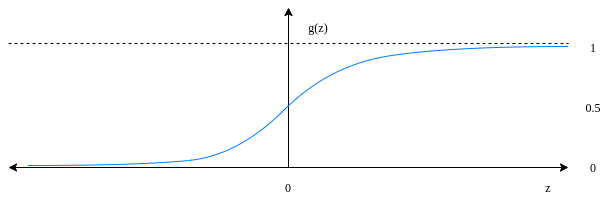

1. Logistic Regression
Logistic regression is used to solve classification problems, especially binary classification problems, in which the model output is a discrete value corresponding to a class or category.
In order to squash the input value from a wide unbounded range into a limited range \((0, 1)\), we use the sigmoid function as below.
\[g(z) = \frac{1}{1 + e^{-z}}\]
The sigmoid function can be visualized as the graph below
With the input feature vector \(X = [\begin{array}{}1&x_1&x_2&...&x_N\end{array}]\) and the actual value \(Y\), the objective of logistic regression is to find the weight vector \(W = [\begin{array}{}w_0&w_1&w_2&...&w_N\end{array}]\) so that it satisfies the following condition.
\(W^T X\) is a linear combination output of the feature vector and the weight vector, we apply sigmoid function to get hypothesis function.
\[h_{W}(X) = \frac{1}{1 + e^{-W^T X}}\]
In binary classification problems, there are two possible cases
-
The input actual value \(Y = 1\): If the output of the hypothesis function \(h_{W}(X)\) is also \(1\), the error or the output of the cost function must be zero. Otherwise, if the output of the hypothesis function \(h_{W}(X)\) is zero, the output of the cost function must be very large. In order to satisfy this case, the cost function is defined as \(-\log(h_{W}(X))\)
-
The input actual value \(Y = 0\): Similarly, the cost function is \(-\log(1 - h_{W}(X))\)
The cost function for 2 cases
\[cost(h_{W}(X), Y) = \begin{cases}-\log(h_{W}(X)) & Y = 1 \\ -\log(1 - h_{W}(X)) & Y = 0 \end{cases}\]
\[cost(h_{W}(X), Y) = -Y \times \log(h_{W}(X)) -(1 - Y) \times \log(1 - h_{W}(X)) \]
For \(M\) observations, the cost function is
\[J(w) = -\frac{1}{M} \sum_{i = 1}^{M}\left[ Y^i \times \log(h_{W}(X^i)) + (1 - Y^i) \times \log(1 - h_{W}(X^i)) \right]\]
Gradient Descent
To apply gradient descent to update the value of \(w_j\), we need to take the partial derivative of the cost function at each \(w_j\)
\[\frac{\delta J(w)}{\delta w_j} = -\frac{1}{M} \sum_{i = 1}^{M}\left[ Y^i \times \frac{\delta \log(h_{W}(X^i))}{\delta w_j} + (1 - Y^i) \times \frac{\delta \log(1 - h_{W}(X^i))}{\delta w_j} \right] = -\frac{1}{M} \sum_{i = 1}^{M}\left[ Y^i \times \frac{\frac{\delta h_{W}(X^i)}{\delta w_j}}{h_{W}(X^i)} - (1 - Y^i) \times \frac{\frac{\delta h_{W}(X^i)}{\delta w_j}}{1 - h_{W}(X^i)} \right] \tag{1}\]
We know that
\[\frac{\delta h_{W}(X)}{\delta w_j} = \frac{\delta \frac{1}{1 + e^{-W^T X}}}{\delta w_j} = \frac{e^{-{W^T}X} \times x_j}{(1 + e^{-{W^T}X})^2} = \frac{1}{1 + e^{-{W^T}X}} \times \frac{1 + e^{-{W^T}X} - 1}{1 + e^{-{W^T}X}} \times x_j = \frac{1}{1 + e^{-{W^T}X}} \times (1 - \frac{1}{1 + e^{-{W^T}X}}) \times x_j = h_{W}(X) \times (1 - h_{W}(X)) \times x_j \tag{2}\]
Substitute \((2)\) into \((1)\), we have
\[\frac{\delta J(w)}{\delta w_j} = -\frac{1}{M} \sum_{i = 1}^{M}\left(Y^i \times (1 - h_{W}(X^i)) \times x_j^i + (1 - Y^i) \times h_{W}(X^i) \times x_j^i \right) = \frac{1}{M} \sum_{i = 1}^{M}\left(h_{W}(X^i) - Y^i\right) \times x_j^i\]
The learning function is
\[w_j \leftarrow w_j - \alpha \times \frac{1}{M} \sum_{i = 1}^{M}\left(h_{W}(X^i) - Y^i\right) \times x_j^i\]
2. Experiment
Demo video
3. References
- https://www.baeldung.com/cs/gradient-descent-logistic-regression
- https://christophm.github.io/interpretable-ml-book/logistic.html
- https://towardsdatascience.com/why-not-mse-as-a-loss-function-for-logistic-regression-589816b5e03c
- https://towardsdatascience.com/multiclass-classification-algorithm-from-scratch-with-a-project-in-python-step-by-step-guide-485a83c79992